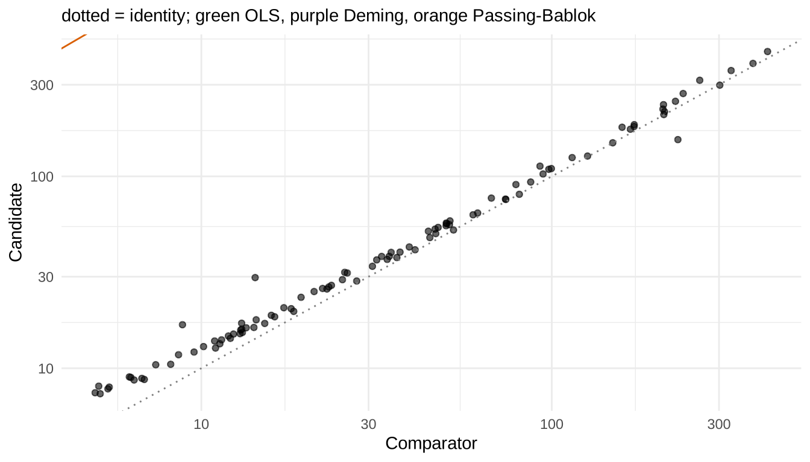
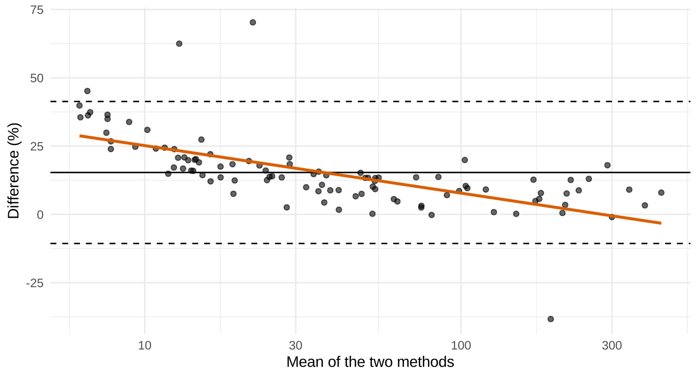

set.seed(11)
n <- 100
t <- exp(runif(n, log(5), log(500)))
x <- t * (1 + rnorm(n, 0, 0.03))
y <- 2 + 1.06 * t * (1 + rnorm(n, 0, 0.04))
y[c(10, 50, 90)] <- y[c(10, 50, 90)] * c(1.5, 0.6, 1.7) # outliers
dat <- data.frame(x, y)Day 4. Method comparison, bias, interference, stability, lots
Tags: [S] primary public source, [Y] my synthesis. All data simulated.
(a) Concept
| Study | Question | Core statistic |
|---|---|---|
| Method comparison (EP09c) | Do candidate and comparator agree? Bias at decision levels? | Deming / Passing–Bablok regression, bias with CI |
| Interference (EP07) | Does a substance change the result by more than allowable error? | paired difference ± CI vs allowable limit |
| Reagent stability (EP25) | How long until results drift beyond a limit? | regression over time, bound crossing the limit |
| Lot-to-lot (EP26) | Does a new lot shift patient results by a clinically important amount? | paired difference ± CI vs acceptable difference |
OLS assumes x is error-free. Both methods have error, so use errors-in-variables regression: Deming (normal errors, outlier-sensitive) or Passing–Bablok (rank-based, robust, needs a roughly linear relation). [Y]
(b) Regulatory anchor
| Document | Verified fact | Tag |
|---|---|---|
| EP09c | Ed3 corrected, 2018-06-20; EP09-A3 (2013) withdrawn 2018. Design/analysis of method comparison with patient samples to estimate bias | [S] clsi.org |
| EP07 | Ed3, 2018-04-30, confirmed 2022; screening, quantifying, confirming interference; EP37 = supplemental interferent-concentration tables (edition not verified) | [S] clsi.org |
| EP25 | Ed2, 2023-04-26 (replaces EP25-A, 2009); regression-based shelf-life and in-use stability | [S] clsi.org |
| EP26 | Ed2, 2022-04-27 (replaces EP26-A, 2013); user evaluation of reagent lot change with a small number of patient samples | [S] clsi.org |
| Sample counts, concentration-range rules, allowable-error rules | not verified: paywalled (the often-quoted ≥ 100 samples for EP09 is therefore not asserted) | – |
| IVDR | Annex I 9.1(a): trueness (bias), precision, interference-related analytical specificity | [S] |
(c) R lab
Simulated comparison
True concentrations 5–500 (log-uniform), reference method CV 3%, candidate has +2 constant and +6% proportional bias, CV 4%, plus 3 gross outliers.
OLS, Deming, Passing–Bablok
fit_ols <- lm(y ~ x)
fit_dem <- mcreg(x, y, method.reg = "WDeming", error.ratio = 1, method.ci = "jackknife")Jackknife based calculation of standard error and confidence intervals according to Linnet's method.fit_pb <- mcreg(x, y, method.reg = "PaBa", method.ci = "bootstrap", method.bootstrap.ci = "BCa", nsamples = 999)
ci_ols <- confint(fit_ols)
tab <- rbind(
data.frame(Method = "OLS", Intercept = coef(fit_ols)[1], Slope = coef(fit_ols)[2],
`Int 95% CI` = sprintf("%.2f to %.2f", ci_ols[1, 1], ci_ols[1, 2]),
`Slope 95% CI` = sprintf("%.3f to %.3f", ci_ols[2, 1], ci_ols[2, 2])),
data.frame(Method = "Weighted Deming", Intercept = fit_dem@para[1, 1], Slope = fit_dem@para[2, 1],
`Int 95% CI` = sprintf("%.2f to %.2f", fit_dem@para[1, 3], fit_dem@para[1, 4]),
`Slope 95% CI` = sprintf("%.3f to %.3f", fit_dem@para[2, 3], fit_dem@para[2, 4])),
data.frame(Method = "Passing-Bablok", Intercept = fit_pb@para[1, 1], Slope = fit_pb@para[2, 1],
`Int 95% CI` = sprintf("%.2f to %.2f", fit_pb@para[1, 3], fit_pb@para[1, 4]),
`Slope 95% CI` = sprintf("%.3f to %.3f", fit_pb@para[2, 3], fit_pb@para[2, 4])))
names(tab) <- c("Method", "Intercept", "Slope", "Int 95% CI", "Slope 95% CI")
kable(tab, digits = 3, row.names = FALSE,
caption = "True intercept 2, slope 1.06; 3 outliers present")| Method | Intercept | Slope | Int 95% CI | Slope 95% CI |
|---|---|---|---|---|
| OLS | 2.491 | 1.046 | -0.24 to 5.22 | 1.021 to 1.071 |
| Weighted Deming | 2.238 | 1.055 | 1.91 to 2.56 | 1.027 to 1.082 |
| Passing-Bablok | 2.027 | 1.064 | 1.73 to 2.36 | 1.035 to 1.081 |
Cross-check of point estimates against hand implementations (rule 4):
dem_pkg <- mcreg(x, y, method.reg = "Deming", error.ratio = 1, method.ci = "analytical")@para[, 1]
pb_pkg <- mcreg(x, y, method.reg = "PaBa", method.ci = "analytical")@para[, 1]
chk <- data.frame(
estimate = c("Deming intercept", "Deming slope", "PaBa intercept", "PaBa slope"),
package = c(dem_pkg, pb_pkg), hand = c(deming_hand(x, y, 1), paba_hand(x, y)))
kable(chk, digits = 5)| estimate | package | hand |
|---|---|---|
| Deming intercept | 1.96850 | 1.96850 |
| Deming slope | 1.05405 | 1.05405 |
| PaBa intercept | 2.02662 | 2.02662 |
| PaBa slope | 1.06388 | 1.06388 |
stopifnot(isTRUE(all.equal(chk$package, chk$hand, tolerance = 1e-6)))ggplot(dat, aes(x, y)) + geom_point(alpha = .6) +
geom_abline(slope = 1, intercept = 0, colour = "grey50", linetype = 3) +
geom_abline(slope = coef(fit_ols)[2], intercept = coef(fit_ols)[1], colour = "#1b9e77") +
geom_abline(slope = fit_dem@para[2, 1], intercept = fit_dem@para[1, 1], colour = "#7570b3") +
geom_abline(slope = fit_pb@para[2, 1], intercept = fit_pb@para[1, 1], colour = "#d95f02") +
scale_x_log10() + scale_y_log10() +
labs(x = "Comparator", y = "Candidate",
subtitle = "dotted = identity; green OLS, purple Deming, orange Passing-Bablok") +
theme_minimal()
OLS is pulled by the outliers and by errors in x; Passing–Bablok stays near the truth. [Y]
Bias at medical decision levels
lv <- c(20, 100, 300)
bd <- as.data.frame(calcBias(fit_dem, x.levels = lv))
bp <- as.data.frame(calcBias(fit_pb, x.levels = lv))
hand_bias <- function(p, l) p[1] + (p[2] - 1) * l # a + (b-1)*Xc
kable(data.frame(
`Decision level` = lv,
`Deming bias (95% CI)` = sprintf("%.2f (%.2f to %.2f)", bd$Bias, bd$LCI, bd$UCI),
`PaBa bias (95% CI)` = sprintf("%.2f (%.2f to %.2f)", bp$Bias, bp$LCI, bp$UCI),
`Hand a+(b-1)Xc, PaBa` = round(hand_bias(fit_pb@para[, 1], lv), 2),
`Rel. bias % (PaBa)` = round(100 * bp$Bias / lv, 1), check.names = FALSE),
caption = "Bias at decision levels; true bias = 2 + 0.06 X")| Decision level | Deming bias (95% CI) | PaBa bias (95% CI) | Hand a+(b-1)Xc, PaBa | Rel. bias % (PaBa) |
|---|---|---|---|---|
| 20 | 3.33 (2.91 to 3.75) | 3.30 (3.09 to 3.61) | 3.30 | 16.5 |
| 100 | 7.71 (5.15 to 10.27) | 8.42 (5.78 to 9.93) | 8.42 | 8.4 |
| 300 | 18.66 (10.58 to 26.73) | 21.19 (12.75 to 26.08) | 21.19 | 7.1 |
stopifnot(isTRUE(all.equal(bp$Bias, hand_bias(fit_pb@para[, 1], lv), tolerance = 1e-8)))Bland–Altman with proportional bias
ba <- data.frame(mean = (x + y) / 2, rel = 100 * (y - x) / ((x + y) / 2))
pbias <- lm(rel ~ log10(mean), ba)
loa <- mean(ba$rel) + c(-1.96, 1.96) * sd(ba$rel)
ggplot(ba, aes(mean, rel)) + geom_point(alpha = .6) + scale_x_log10() +
geom_hline(yintercept = c(mean(ba$rel), loa), linetype = c(1, 2, 2)) +
geom_smooth(method = "lm", se = FALSE, colour = "#d95f02") +
labs(x = "Mean of the two methods", y = "Difference (%)") + theme_minimal()
c(mean_diff_pct = mean(ba$rel), LoA_lo = loa[1], LoA_hi = loa[2],
p_trend = summary(pbias)$coefficients[2, 4])mean_diff_pct LoA_lo LoA_hi p_trend
1.533644e+01 -1.065647e+01 4.132935e+01 3.347871e-13 A significant trend of relative difference with level signals bias that depends on concentration (here the constant +2 matters at low levels). Limits of agreement do not replace a regression-based bias estimate at decision levels. [Y]
Interference (EP07 logic) [Y]
set.seed(70)
ctrl <- rnorm(10, 100, 3); test <- rnorm(10, 104, 3) # true +4% effect
d <- test - ctrl; se <- sd(d) / sqrt(10)
ci <- mean(d) + c(-1, 1) * qt(.975, 9) * se
tt <- t.test(test, ctrl, paired = TRUE)
allow <- 10 # assumed allowable error, % of 100
data.frame(mean_diff = mean(d), lo = ci[1], hi = ci[2], t_test_lo = tt$conf.int[1],
t_test_hi = tt$conf.int[2], within_allowable = all(abs(ci) <= allow)) mean_diff lo hi t_test_lo t_test_hi within_allowable
1 6.201981 4.358726 8.045237 4.358726 8.045237 TRUEstopifnot(isTRUE(all.equal(ci, as.numeric(tt$conf.int))))Conclude “no clinically relevant interference” only if the whole CI sits inside the allowable limit, not because the test is non-significant. [Y]
Reagent stability (EP25 logic) [Y]
set.seed(25)
mo <- rep(c(0, 2, 4, 6, 8, 10, 12), each = 3)
val <- 100 - 0.45 * mo + rnorm(length(mo), 0, 0.8)
fit <- lm(val ~ mo)
grid <- data.frame(mo = seq(0, 24, 0.1))
pr <- predict(fit, grid, se.fit = TRUE)
lower <- pr$fit - qt(.95, df.residual(fit)) * pr$se.fit # one-sided 95% lower bound
limit <- 95
shelf <- grid$mo[which(lower < limit)[1]]
shelf_hand <- {
f <- function(t) { s <- summary(fit); xb <- mean(mo); sxx <- sum((mo - xb)^2)
se <- s$sigma * sqrt(1 / length(mo) + (t - xb)^2 / sxx)
coef(fit)[1] + coef(fit)[2] * t - qt(.95, df.residual(fit)) * se - limit }
uniroot(f, c(0, 24))$root }
c(shelf_life_months = shelf, hand_uniroot = shelf_hand)shelf_life_months hand_uniroot
10.30000 10.28842 stopifnot(abs(shelf - shelf_hand) < 0.1)Claim the shelf life at the time the one-sided bound crosses the acceptance limit (here a 5% loss), not where the mean line does. EP25 Ed2’s exact acceptance rules: not verified: paywalled.
Lot-to-lot (EP26 logic) [Y]
set.seed(26)
m <- 40
base <- exp(runif(m, log(10), log(400)))
lotA <- base * (1 + rnorm(m, 0, .02)); lotB <- base * 1.015 * (1 + rnorm(m, 0, .02))
pd <- 100 * (lotB - lotA) / lotA
ci <- mean(pd) + c(-1, 1) * qt(.975, m - 1) * sd(pd) / sqrt(m)
mad <- 3 # assumed medically acceptable difference, %
data.frame(mean_pct_diff = mean(pd), lo = ci[1], hi = ci[2],
acceptable = ci[2] < mad & ci[1] > -mad) mean_pct_diff lo hi acceptable
1 1.196325 0.2454338 2.147216 TRUE(d) Ten interview questions
show_questions(4, "../interview_questions.csv")Q1. Why not ordinary least squares for method comparison?
OLS assumes the comparator has no error; with error in x the slope is attenuated and the intercept biased. Deming (known error ratio) or Passing-Bablok (nonparametric) account for error in both methods.
Q2.
Deming: roughly normal errors, no gross outliers, error ratio known or estimated from replicates (weighted version when CV is constant). Passing-Bablok: robust to outliers and distribution, needs a linear relationship and positively correlated measurements; its CI can be wide and is usually bootstrapped for bias.
Q3.
From the regression: bias(Xc) = a + (b - 1) Xc, with CI from jackknife (Deming) or bootstrap (Passing-Bablok), not by combining slope and intercept CIs separately (they are correlated). Compare against allowable bias at that level.
Q4. What does Bland-Altman add, and what are its limits?
Visualises agreement and the distribution of differences with limits of agreement; use relative differences when error scales with level. It does not provide bias at specific levels with CIs and mixes constant and proportional bias.
Q5. Three outliers in 100 samples - what do you do?
Never drop them silently. Investigate (sample mix-up, interference), report the analysis with and without them, and prefer a robust estimator. Pre-specify the outlier rule in the plan.
Q6. Which concentration range and how many samples for a method comparison?
Spread across the measuring interval and around decision levels, patient samples, not spiked pools only. Exact counts and distribution rules are in EP09c (not verified: paywalled); I would justify n by the CI width of bias at decision levels via simulation.
Q7. How do you decide that an interferent does not matter?
Compare paired results with and without interferent (EP07 Ed3 style), estimate the difference with CI and require the entire CI within the allowable error at relevant levels; test several interferent concentrations. Non-significance is not equivalence.
Q8.
Regress response on time, compute a one-sided 95% bound for the mean, and take the time where the bound meets the acceptance limit. EP25 Ed2 (2023) is regression-based; its exact acceptance rules are paywalled (not verified).
Q9. What does an EP26-style lot-to-lot evaluation test and why use patient samples?
Whether new-lot minus old-lot differences exceed a medically acceptable difference; patient samples because control materials may not be commutable. Stage 1 sets the acceptable difference and risk; Stage 2 is the routine per-lot check (EP26 Ed2, 2022).
Q10. Which IVDR GSPR statistics do these studies feed?
Annex I 9.1(a): trueness (bias), precision, analytical specificity (interference), limits of detection/quantitation, measuring range, linearity. Each maps to an EP document.
(e) Claims
Editions and scopes for EP09c, EP07, EP37, EP25, EP26 are in the ledger. Design counts and acceptance criteria: not verified: paywalled.